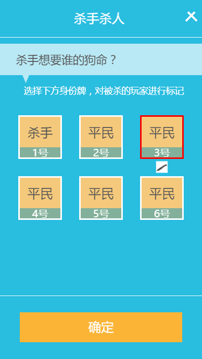
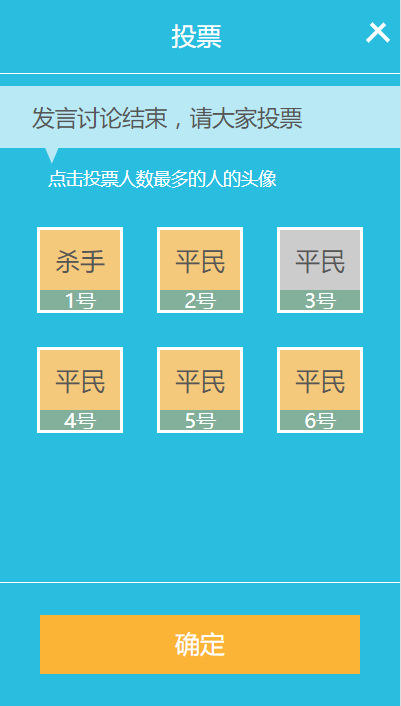
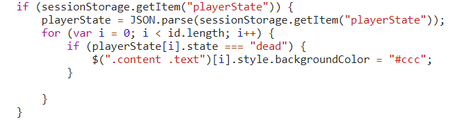
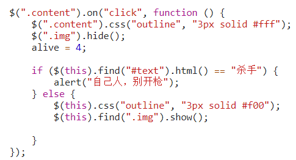
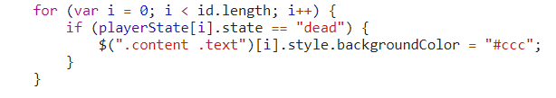
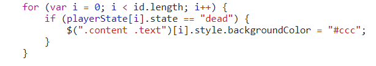
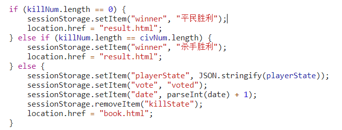
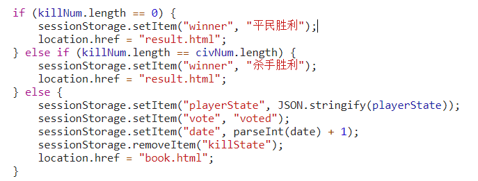

【JS-task04】杀人和投票的业务逻辑上有什么区别？
小课堂【武汉-272期】
分享人：邱天成
目录
1.背景介绍
2.知识剖析
3.常见问题
4.解决方案
5.编码实战
6.扩展思考
7.参考文献
8.更多讨论
1.背景介绍
什么是业务逻辑？
比如你开发了一个收款系统，一件商品卖10元钱。有人买了10个就是100元。这个很有逻辑。但是这时候客户说了：“不行，我们搞活动买10个打8折，所以总价是80元”，这就是业务逻辑。 这种逻辑和程序员可以推断的常理来说的逻辑不同，比如，一个商品的价格保存以后，除非有人改动，下次读取应该保持一致，比如不能把一个价格除零。业务逻辑是由客户的需求所决定的。另外经常这种逻辑是容易改动的。 在程序里用专门的模块或者层来处理业务逻辑，可以隔离这种变化对程序其它部分的影响。
2.知识剖析
杀人页面:
上图就是杀人页面，业务逻辑有如下几个：
- 首先是样式渲染，因为第二天进入杀人页面的话，有的玩家已经死亡，我们需要用特殊的样式或状态标记出来。
- 然后杀人时的标记（上图的红框跟“刀”的图片
- 点击“确定”按钮时的逻辑：
点击“确定”按钮时的逻辑：
- 如果杀手没有杀人，则弹出警告“请杀人”
- 如果被标记的人是“杀手”，则弹出警告，“不能杀同类”
- 将要杀的玩家状态改为“死亡”
- 判断游戏是否结束，如果贫民为0的话游戏胜利游戏结束，跳转结果页面，否则游戏继续
- 跳转到“法官日志”页面
投票页面：
投票页面的逻辑：
- 一开始也是渲染死亡玩家的样式
- 标记想投死的人
- 然后点击“确定”按钮的逻辑
点击“确定”按钮的逻辑：
- 先判定是否没有标记被投玩家,如果是则弹出警告框“请投票”
- 然后将被投的玩家状态改为“死亡”
- 判断游戏是否胜利，如果平民的数量跟杀手数量相等，则“杀手胜利”，跳转结果页面，如果杀手数量为0，则“平民胜利”，跳转结果页面，否则游戏继续
- 跳转到“法官日志”页面
3.常见问题
这两个页面的区别主要在游戏结束的判定上，由于杀人不能杀自己人，所以在杀人页面平民是不可能胜利；在投票页面每个人都有可能死亡，所以“杀手”跟“平民”都是有可能胜利的。
4.解决方法
5、编码实战
杀人页面：
 投票页面：
 

 

6、扩展思考
7、参考文献：
8、更多讨论
谢谢大家
制作人： 邱天成